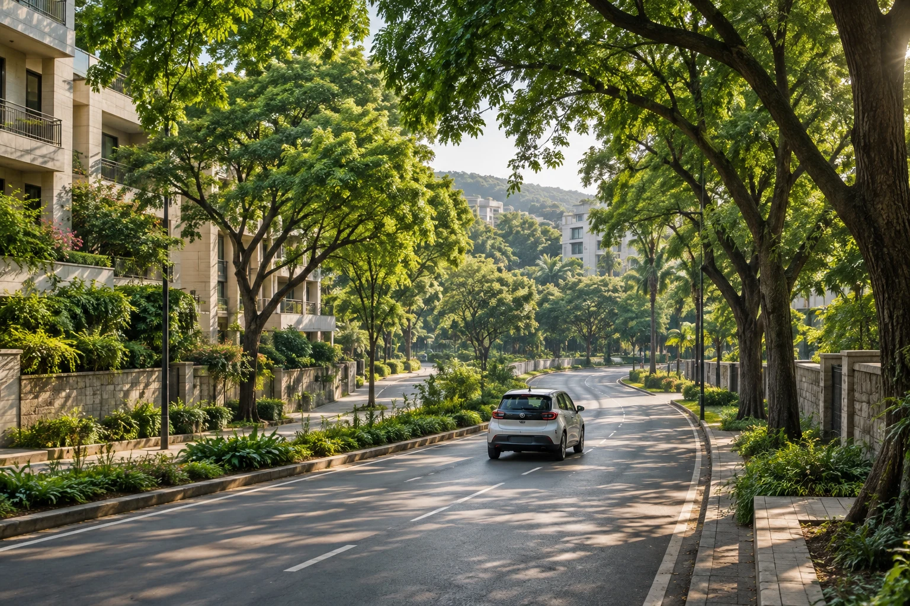

Get connected.
Create your account and complete the required operator checks. Drivers submit their licence and vehicle RC for private review.
A little room in your car.
A little more room for our city to breathe.
Shared rides, cars and bikes that connect your everyday journey with a greener tomorrow.
Explore Our Impact ↗︎Your empty seat could replace a separate trip.
When people heading the same way share an already-planned journey, fewer cars may need to make that route. Eligible tracked segments can avoid tailpipe emissions, depending on the journey they replace.
See live and lifetime carbon estimates and modelled vehicle-hours avoided, with the methodology explained.
The city we nurture is the city we’ll share.
Maintained trees can support cooler, more comfortable neighbourhoods as their canopies grow. Suitable planting, water and ongoing care all matter.
Local cooling is reported only with a documented temperature study. Carbon savings are never converted directly into degrees of city cooling.
50% of annual net profit after tax is committed to planting and caring for city trees.
Our promise ↗︎A seat to share. A car to yourself.
A lighter way through the city.
A spare seat. A shared route.
Make the everyday go further.
Your own space for the journey.
Simple, comfortable travel.
One passenger, a smaller ride.
A nimble choice for your day.
A dedicated option with a verified woman driver and all-women passengers. Select Ladies in the app to find eligible offers.
Create your account and complete the required operator checks. Drivers submit their licence and vehicle RC for private review.
Choose pickup, destination and date. Review real offers, departure times and fares—or publish your own approved journey.
Use your trip-start PIN, share your journey, and keep your Captain and emergency help within reach.

50% of annual net profit after tax is committed to planting and caring for city trees.
This annual allocation follows business expenses and tax. It is a profit commitment, rather than a fixed amount from each fare.
Your booking has a private automated conversation and check-ins while the app is open. Help replies are recorded for operator review. Captain does not dispatch emergency services.
Your trips & Captain ↗︎Operator account and vehicle approval, including private driving licence and RC photo review. Automatic government verification is not connected.
Use your booking’s trip-start PIN with the driver before beginning your journey.
Share a time-limited journey link and save a trusted contact in your Account.
The floating SOS control opens emergency calling and sharing options. In immediate danger, call 112. A staffed emergency response is not connected.
Follow estimates and recorded outcomes in the app. Missing measurements stay visible as missing data.
Live and lifetime avoided-carbon estimates for eligible tracked shared rides.
✳Separate recorded rider and owner allocations, backed by evidence.
◷Estimated avoided vehicle travel time, with the assumptions explained.
°CTemperature changes only from documented local studies, with comparison measurements.
“Protecting our Mother Earth is our responsibility. Let’s cherish and preserve her beauty together.”
Planto-Ride began with Navnath Sonawane, an IT Engineer from Pune, and a belief that the journeys we already make can become part of a better future.
Riders, vehicle owners, planting partners and investors:
join a vision rooted in Pune.
The web app is available as a test pilot. It shows real offers from approved drivers; availability depends on published journeys. Android and iPhone store downloads are not yet available.
Benefits depend on the journey it replaces. The app estimates avoided emissions for eligible shared rides using tracked distance and declared alternative transport. It does not assign savings to every booking.
Cooling depends on canopy growth, location, water, maintenance and local weather. The app reports degrees Celsius only when a documented local study has been recorded.